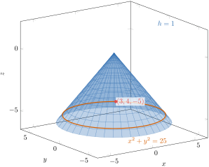

1.
Consider the function
\begin{equation*}
h(x,y,z) = z + \sqrt{x^2+y^2} + 1 .
\end{equation*}
Sketch the level surface of \(h\) that passes through the point \((3,4,-5)\text{.}\) Clearly label the value of \(h\) on that surface, and label the coordinate axes.
Solution.
The level surfaces of \(h\) are the surfaces \(h(x,y,z) = c\text{.}\) To find which one passes through \((3,4,-5)\) we simply evaluate:
\begin{align*}
h(3,4,-5) \amp = -5 + \sqrt{3^2+4^2} + 1\\
\amp = -5 + \sqrt{25} + 1\\
\amp = -5 + 5 + 1 = 1 .
\end{align*}
So the level surface we want is \(h(x,y,z) = 1\text{.}\)
Now we simplify the equation of that level surface:
\begin{align*}
z + \sqrt{x^2+y^2} + 1 \amp = 1\\
z + \sqrt{x^2+y^2} \amp = 0\\
z \amp = -\sqrt{x^2+y^2} .
\end{align*}
This is a cone. Indeed, squaring gives \(z^2 = x^2+y^2\text{,}\) which is the full double cone; but the equation \(z = -\sqrt{x^2+y^2}\) forces \(z \le 0\text{,}\) so we keep only the lower nappe. The vertex is at the origin, and the horizontal trace at height \(z = -k\) (with \(k \gt 0\)) is the circle \(x^2+y^2 = k^2\) of radius \(k\text{.}\) In other words the cone opens downwards, and the slope of every straight line drawn on it from the vertex is \(-1\text{.}\) The point \((3,4,-5)\) lies on it, since \(-\sqrt{3^2+4^2} = -5\text{.}\) See Figure 5.12.62.

A cone with its vertex at the origin opening downwards around the negative z axis. The horizontal circle of radius five is drawn on it in the plane z equals negative five, and the point three, four, negative five is marked on that circle.